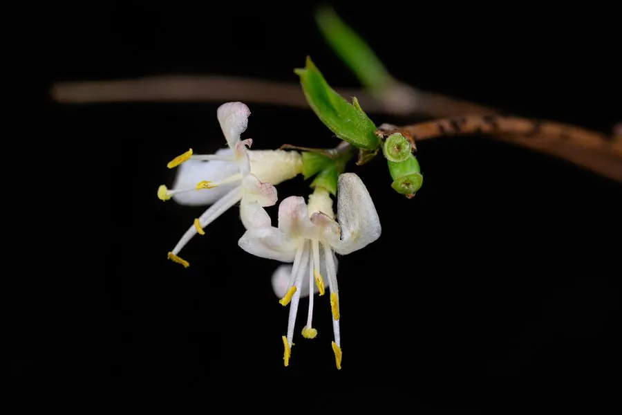

灌木与花木 · 植物界
郁香忍冬 Lonicera fragrantissima

忍冬科忍冬属半常绿灌木，早春先叶开花，花朵洁白芳香，是北方早春重要的香花灌木，果熟时鲜红诱人。
- 分类
- 门被子植物门纲木兰纲目川续断目科忍冬科属忍冬属
- 栖息环境
- 山坡灌丛与林缘，喜光耐半阴、耐寒耐旱
- 地理分布
- 中国河北、山西、陕西、山东、江苏、浙江、安徽、江西、河南、湖北、四川等地
- 保护级别
- 暂无评估；未被列入国家重点保护野生植物名录
物种志
郁香忍冬为忍冬科忍冬属半常绿灌木，高约两米，枝条开展，小枝髓心充实。叶片对生，卵状椭圆形，表面深绿，入冬后部分叶片宿存。花成对生于叶腋，先叶开放，花冠二唇形，白色至淡黄色，香气浓郁，花期二至四月；浆果椭圆形，成熟时鲜红色，果期五至六月。
郁香忍冬分布于中国河北、山西、陕西、山东、江苏、浙江、安徽、江西、河南、湖北、四川等地，多生于山坡灌丛和林缘。它喜光也耐半阴，耐寒、耐旱，对土壤要求不严。早春寒意未消时即开花，花香清甜浓郁，是北方早春重要的香花灌木；秋季红果点缀枝头，也可观果。园林中常植于庭前、路旁和假山旁，也可作切花材料。
形态与习性
- 株高约 2 m，枝条开展
- 花期2–4 月，先叶开放、芳香
- 果期5–6 月，浆果鲜红
- 光照喜光，也耐半阴
- 水分耐旱，忌积水
- 土壤疏松壤土，适应性强
- 主要用途早春香花灌木，观果
趣味知识
- 郁香忍冬在二月末至三月就开花，是北方最早开花的灌木之一。
- 它的花香清甜浓郁，几米之外就能闻到，因此得名郁香。
- 花谢后结出鲜红色浆果，虽然好看，但口感不佳，不宜食用。